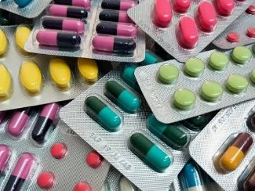

Health
When Medicines Stop Working: The Growing Danger of Antibiotic Resistance
A simple prescription today could become a serious problem tomorrow
Imagine developing a bacterial infection and visiting a hospital expecting medication to help you recover. You receive treatment, follow the instructions, but the medicine fails to work as expected

For many people, the immediate reaction would be to assume that the illness is unusually serious. However, one possible explanation is antibiotic resistance, a growing public health challenge that threatens the effectiveness of medicines used to treat bacterial infections.Antibiotics are essential in treating bacterial infections, but their misuse can contribute to antimicrobial resistance.
Antibiotics which include: amoxicillin, penicillin,cetrizine,cephalexin, tetracycline and many others have transformed modern medicine. They are used to treat bacterial infections such as pneumonia, urinary tract infections and certain skin infections. However, their effectiveness is increasingly threatened when bacteria develop the ability to survive medicines that previously killed them or stopped their growth. This phenomenon is known as antimicrobial resistance (AMR). Importantly, it is the bacteria that become resistant, not the human body.
How does antibiotic resistance develop?
Antibiotic resistance is a natural evolutionary process, but inappropriate antibiotic use accelerates it. For example, taking antibiotics without a proper prescription, using leftover medication, sharing medicines with friends or using antibiotics for viral infections such as ordinary colds can contribute to inappropriate use. When antibiotics are used unnecessarily or incorrectly, susceptible bacteria may be eliminated while resistant bacteria survive and multiply.
The World Health Organization's 2025 Global Antibiotic Resistance Surveillance Report highlights the growing threat of resistant infections, drawing on more than 23 million laboratory-confirmed cases reported by participating countries.
Kenya is not exempt. Kenya is also experiencing challenges associated with increasing antibiotic consumption.
A 2026 case study by researchers associated with the University of Nairobi's Centre for Epidemiological Modelling and Analysis examined antibiotic consumption patterns between 2020 and 2024.
The study found that national antibiotic consumption increased from 14.3 to 22.2 defined daily doses per 1,000 inhabitants per day over that period. It also identified concerns around the consumption of antibiotics classified by WHO as belonging to the Watch category, which require careful monitoring because of their resistance potential.
These findings highlight why responsible antibiotic use is important for Kenya's healthcare system. The WHO emphasises that antimicrobial resistance is not simply a problem for hospitals or doctors. It affects human health, animals, agriculture and the environment.
Kenya's National Action Plan on Antimicrobial Resistance (2023–2027) recognises the need for coordinated action across these sectors. The WHO's 2025 Kenya annual report also describes efforts to expand resistance monitoring and train healthcare workers in appropriate antibiotic use.

"Every time we misuse antibiotics, we contribute to a problem that could make future infections harder and more expensive to treat. Protecting antibiotics today means protecting tomorrow's generation. Purchasing antibiotics without a prescription encourages misuse and accelerates antibiotic resistance. If this trend continues, common infections could become difficult to treat, making even simple illnesses life-threatening. Antibiotics must therefore be used responsibly and only under professional medical guidance, "Madam Patricia Okoth, pharmacist.Pharmacists play an important role in promoting responsible antibiotic use and discouraging self-medication.